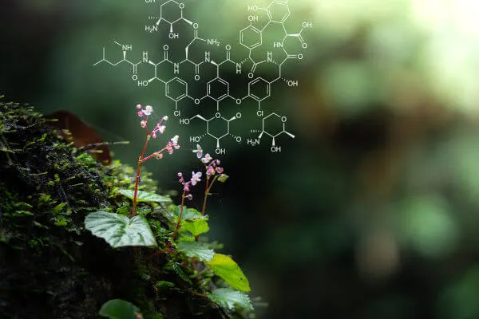

A importância da diversidade vegetal para o equilíbrio dos ecossistemas
A diversidade vegetal é essencial para a manutenção da vida na Terra. As plantas estão presentes em praticamente todos os ecossistemas e desempenham funções fundamentais para o equilíbrio ambiental.
Além de produzirem oxigênio e absorverem gás carbônico, as plantas participam dos ciclos da água e dos nutrientes, ajudam a proteger o solo e fornecem alimento e abrigo para inúmeras espécies de animais.
A diversidade de espécies vegetais também possui grande importância para os seres humanos, contribuindo para a alimentação, produção de medicamentos, matérias-primas e diversos outros recursos utilizados pela sociedade.
Por isso, preservar as plantas e seus ambientes naturais é fundamental para conservar a biodiversidade, manter o equilíbrio dos ecossistemas e garantir recursos para as futuras gerações.
Leia mais sobre Botânica →